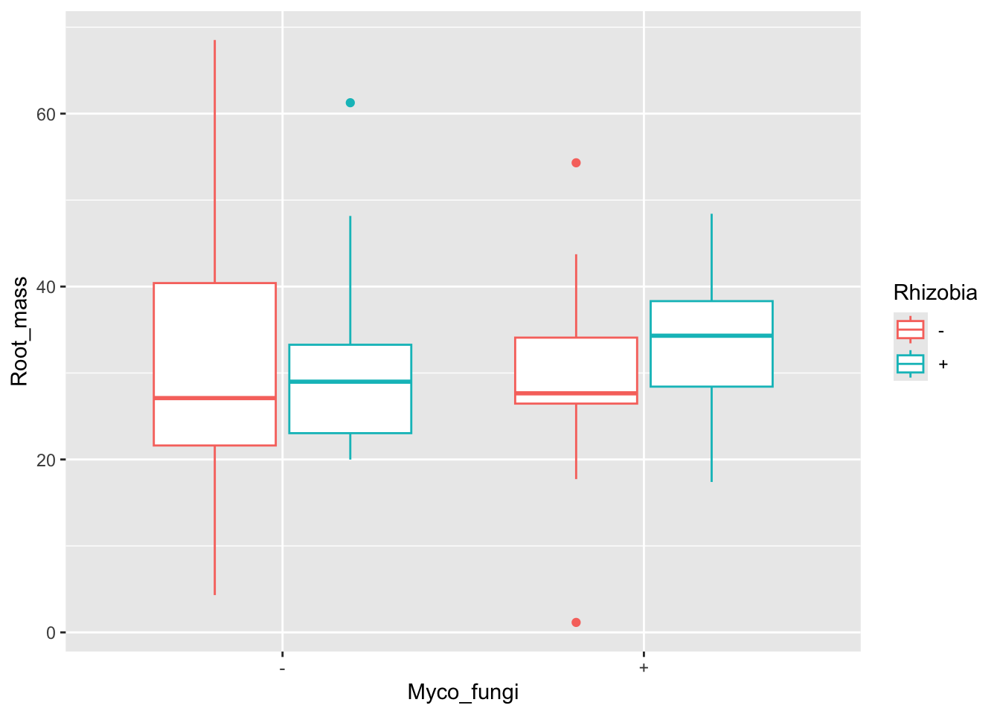
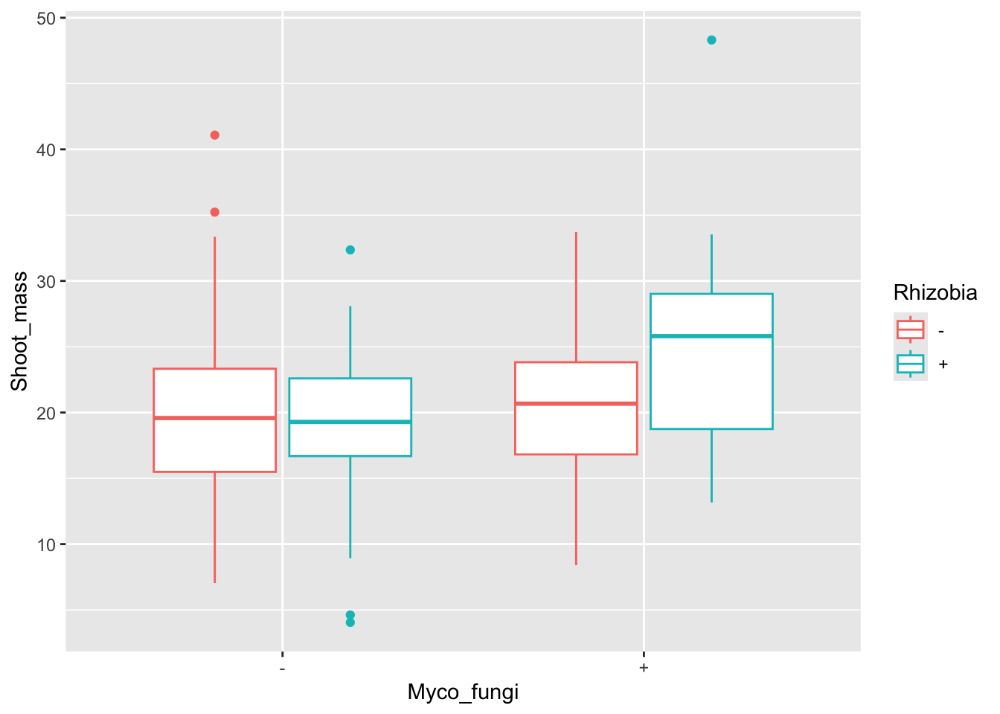
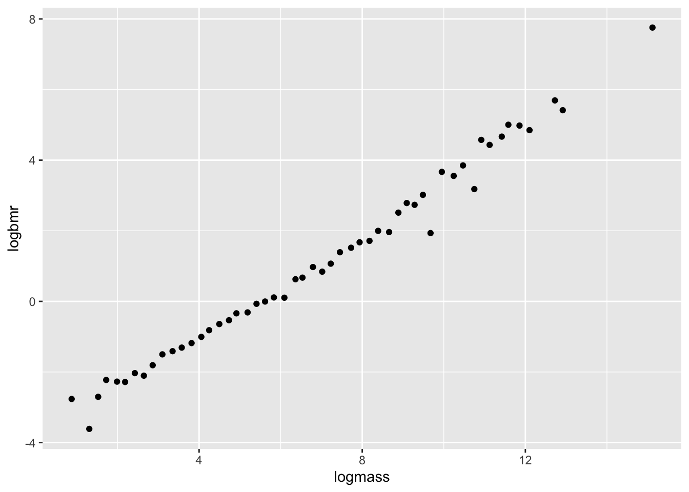
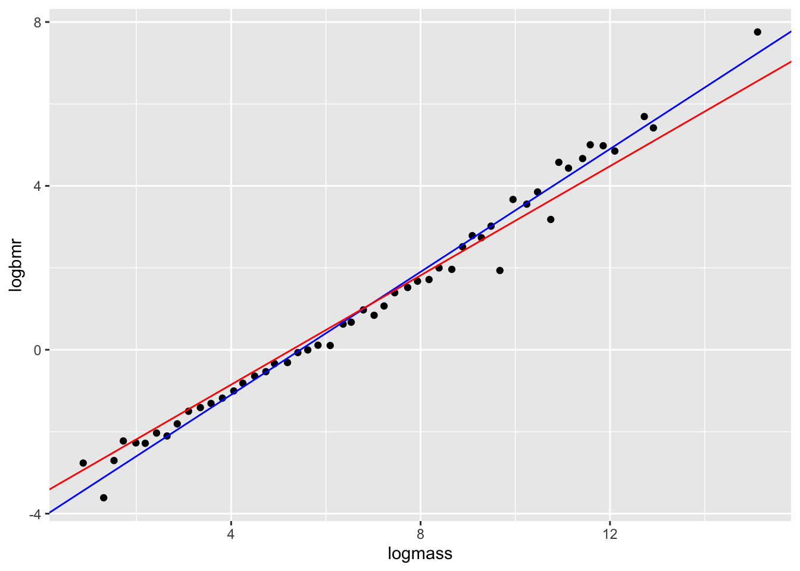

library(tidyverse)
library(MuMIn)
library(glmnet)12 Model selection
12.1 Lesson preamble
12.1.1 Learning objectives
- Understand the difference between likelihood estimation/inference and model selection
- Develop familiarity with common model selection approaches
- Understand intuition for and the use of common information theoretic model selection criteria
- Perform model selection on LMs, GLMs, LMMs
12.2 What is model selection?
So far, we have covered central problems in statistics: determining what processes and parameters gave rise to data (estimation), and quantifying uncertainty in those estimates using confidence intervals (inference). As we have seen, however, to any confidence interval there is an associated hypothesis test. Inference and hypothesis testing, then, involve deciding if a particular set of parameter values could have plausibly given rise to the data.
It should come as no surprise, since both estimation and inference involve decision making, that in statistics we often interested in deciding if the models we build are appropriate descriptions of how the world works (given the data we have and use to fit those models), or what among a set of candidate models is the “best”. This practice is called model selection and is the focus of this lecture.
12.2.1 Examples
Hypothesis testing is a kind of model selection. For example, for data \(x_1,\dots,x_n \sim f(x|\theta)\), testing \(H_0 \colon \theta = \theta_0\) vs \(H_1 \colon \theta \neq \theta_0\) is equivalent to choosing between models \(\mathcal{M}_0 \colon f(x|\theta)\) and \(\mathcal{M}_1 \colon f(x|\theta_0)\).
Suppose we regress \(y\) on the 1st, 2nd, \(\dots\), \(p\)th powers of a covariate \(x\):
\[y = \beta_0 + \beta_1 x + \beta_2 x^2 + \cdots + \beta_p x^p.\]
This gives rise to a sequence of models \(\mathcal{M}_1,\mathcal{M}_2,\dots,\mathcal{M}_p\) of the data generative process. Which model is the best description of the data? Although the full model is more flexible in that it has more parameters than, say, the model in which all second and higher order terms are \(=0\), it is more prone to overfitting. Choosing between a sequence of nested linear models like this is a classic model selection problem.
- Suppose we would like to model the relationship between expression (i.e., the number of transcripts produced) of each coding gene in the human genome and, say, height. If there are \(p\) genes for which we have measurements and only \(n \ll p\) observations, it is not possible to fit
\[y_i = \beta_0 + \beta_1 x_{1i} + \dots + \beta_p x_{pi}.\]
(The reason is that there are infinitely many solutions to the likelihood maximization problem.) In this case, we might want to select a subset of the covariates which best explain the available data. Of \(x_1,\dots,x_p\), which are most informative? This too is a kind of model selection problem.
12.3 Stepwise regression…and why you should not use it.
Suppose you want to model the effects of multiple predictors and their interactions on a particular response variable of interest. It may be tempting, then, to test all possible combinations of predictors and see which set fits the data the best. Stepwise selection involves iteratively adding and removing predictors according to some criterion (e.g., variance explained, AIC). This can be down by adding predictors to a null model or by removing predictors from one which is saturated (i.e., where all predictors and their interactions are included.)
In general, we urge you to AVOID stepwise selection and to be critical of analyses which use it. No statistics can be a substitute for the inclusion of predictors which are biologically meaningful. Stupid models can fit the data well, even when accounting for the number of parameters, and good models can fit the data (relatively) poorly. When choosing between models, careful consideration of the what predictors are informative and why is key.
For more on the problems with automated stepwise selection methods, see here.
12.4 The Akaike information criterion
Rather than (mindlessly) adding and removing predictors, it is important to build models that are based in evidence from good theory and the literature. We can then weigh how much the data supports each model using the Aikake information criterion (AIC)
Suppose we have data \(y_1,\dots,y_n\) that are drawn from a distribution \(p\) and a set of candidate models
\[\mathcal{M}_j = \{p_j(y|\theta_j)\}.\]
It is possible under this setup to find the maximum likelihood estimators for each of the candidate models; it is, however, difficult to compare these models in that the parameters underlying each model might not match (i.e., the models may not be nested). The AIC overcomes this issue, and despite having a lengthy and complicated derivation, is a metric which balances two things: 1) the goodness-of-fit of the model and 2) the number of parameters fitted. There are other methods for model selection that are similar to AIC (such as BIC, \(C_p\)) that follow similar principles but use different penalties.
The intuition and formula for the AIC is as follows. If \(\hat{\theta}_{j,\text{MLE}}\) is the MLE for \(\theta\) under model \(\mathcal{M}_j\), then we can measure the distance between the ground truth (i.e., distribution \(p\) of the data) and fitted model \(\hat{p}_j = p_j(y|\hat{\theta}_{j,\text{MLE}})\) using a metric called the Kullback-Leibler divergence:
\[D_{KL}(p, \hat{p}_j) = \int p(y) \log p(y) \text{d} y - \int p(y) \log \hat{p_j}(y) \text{d} y. \]
Minimizing the Kullback-Leibler divergence (distance) between the ground truth and density \(j\) is a principled way to preform model selection, and forms the basis for the AIC. Note that minimizing only involves the second integral, and we can estimate the integral with an average
\[\frac{1}{n} \log L_j(\hat{\theta}_{j,\text{MLE}}) = \frac{1}{n} \sum_{i=1}^n \log p_j(y_i|\hat{\theta}_{j,\text{MLE}})\]
Importantly, AIC corrects for the fact this is an unbiased estimator of the divergence by adding \(d_j/n\), where \(d_j = \text{dim}(\mathcal{M}_j)\). This term is what penalizes models with a large number of parameters. So,
\[\text{AIC} = - 2 \log L_j(\hat{\theta}_{j,\text{MLE}}) + 2 d_j.\]
Notice we have multiplied the preceding quantities by \(-2n\) to get the above expression; this does not change anything, and is largely for historical reasons. Based on the AIC expression, it is clear 1) the higher the likelihood, the lower the AIC; 2) introducing more parameters into the model without changing the likelihood results in a greater value for the AIC. The balance between goodness-of-fit (likelihood) and the number of parameters (the potential to overfit) is what AIC tries to optimize in choosing between candidate models. As we have shown here, that balance is struck by minimizing the distance between candidate models and the ground truth, while correcting for the bias introduced by having models with different numbers of parameters.
12.4.1 \(\text{AIC}_c\) for small sample sizes
It is sometimes convenient to, when sample sizes are small (\(n < 40\) is a commonly used rule-of-thumb) use the following metric to choose between candidate models:
\[\text{AIC}_c = \text{AIC} + \frac{2d_j(d_j+1)}{n-d_j-1}\]
12.5 Example with a linear model
In 2016, Afkhami and Stinchcombe investigated the effects of multiple microbial mutualists on the performance of the model legume, Medicago truncatula. These microbial mutualists offer different rewards to their plant host; rhizobia bacteria provide fixed nitrogen; mycorrhizal fungi provide phosphorus. Plants were inoculated with either both microbial partners, one microbial partner, or none. Measures of plant performance such as aboveground and belowground biomass, and mutualist performance (nodule count and biomass) were collected.
medicago<-read.csv("data/medicago.csv")
# convert to factor
cols<-c("Block","Plant_ID","Myco_fungi","Rhizobia")
medicago[cols]<-lapply(medicago[cols],factor)
str(medicago)'data.frame': 120 obs. of 8 variables:
$ Block : Factor w/ 5 levels "1","2","3","4",..: 1 1 1 1 1 1 1 1 1 1 ...
$ Plant_ID : Factor w/ 120 levels "1","2","3","4",..: 1 2 3 4 5 6 7 8 9 10 ...
$ Myco_fungi : Factor w/ 2 levels "-","+": 2 1 1 2 1 1 1 2 2 1 ...
$ Rhizobia : Factor w/ 2 levels "-","+": 2 1 2 2 2 2 1 1 1 1 ...
$ Shoot_mass : num 18 14.5 23 25.3 17.8 ...
$ Root_mass : num NA NA NA 28.1 NA ...
$ Nodule_count: int NA NA 40 39 NA 53 0 0 NA NA ...
$ Nodule_mass : num NA NA 0.463 0.726 0.33 NA NA NA NA NA ...Both rhizobia and mycorrhizal fungi interact with the root structures of their plant host. Rhizobia are housed in specialized root structures called nodules while mycorrhizal fungi can make filamentous branches, hyphae, on and inside plant roots. Therefore, we could be interested in testing the effects of both microbial partners on belowground (root) biomass. Let’s plot the data!
ggplot(aes(x = Myco_fungi, y = Root_mass, colour = Rhizobia), data = medicago) +
geom_boxplot()Warning: Removed 67 rows containing non-finite outside the scale range
(`stat_boxplot()`).
It looks like plants inoculated with rhizobia and fungi had higher root biomass. Let’s look at the model.
# main effects + interaction
root1 <- lm(Root_mass ~ Myco_fungi + Rhizobia + Myco_fungi:Rhizobia, data = medicago)
# or simplify to Myco_fungi*Rhizobia
summary(root1)
Call:
lm(formula = Root_mass ~ Myco_fungi + Rhizobia + Myco_fungi:Rhizobia,
data = medicago)
Residuals:
Min 1Q Median 3Q Max
-28.032 -8.557 -1.709 4.909 36.523
Coefficients:
Estimate Std. Error t value Pr(>|t|)
(Intercept) 31.9963 3.5188 9.093 4.29e-12 ***
Myco_fungi+ -2.8121 5.0711 -0.555 0.582
Rhizobia+ -0.4129 5.1795 -0.080 0.937
Myco_fungi+:Rhizobia+ 5.0162 7.2487 0.692 0.492
---
Signif. codes: 0 '***' 0.001 '**' 0.01 '*' 0.05 '.' 0.1 ' ' 1
Residual standard error: 13.17 on 49 degrees of freedom
(67 observations deleted due to missingness)
Multiple R-squared: 0.01675, Adjusted R-squared: -0.04345
F-statistic: 0.2782 on 3 and 49 DF, p-value: 0.8409# no significant interaction! perhaps a model with just the main effects?
# main effects only
root2 <- lm(Root_mass ~ Myco_fungi + Rhizobia, data = medicago)
summary(root2)
Call:
lm(formula = Root_mass ~ Myco_fungi + Rhizobia, data = medicago)
Residuals:
Min 1Q Median 3Q Max
-29.305 -7.941 -2.612 5.790 37.705
Coefficients:
Estimate Std. Error t value Pr(>|t|)
(Intercept) 30.8142 3.0603 10.069 1.27e-13 ***
Myco_fungi+ -0.3571 3.6046 -0.099 0.921
Rhizobia+ 2.1483 3.6046 0.596 0.554
---
Signif. codes: 0 '***' 0.001 '**' 0.01 '*' 0.05 '.' 0.1 ' ' 1
Residual standard error: 13.1 on 50 degrees of freedom
(67 observations deleted due to missingness)
Multiple R-squared: 0.007138, Adjusted R-squared: -0.03258
F-statistic: 0.1797 on 2 and 50 DF, p-value: 0.836Unfortunately, the models do not show significant differences between inoculation treatments. But let’s compare these models using AIC.
AICc(root1, root2) df AICc
root1 5 430.7550
root2 4 428.8273Based on the above, the model without the interaction term is a better fit to the data (lower AIC score). However, the scores for both models are really close! How do we decide which model(s) to interpret? Statisticians have thought about this problem and it turns out that models with delta AIC (or other criterion) less than 2 are considered to be just as good as the top model and thus we shouldn’t just discount them.
Plant investment to the roots is important for microbial mutualist association, but what about aboveground biomass? Could this be impacted by microbial associations?
ggplot(aes(x = Myco_fungi, y = Shoot_mass, colour = Rhizobia), data = medicago)+
geom_boxplot()Warning: Removed 1 row containing non-finite outside the scale range
(`stat_boxplot()`).
# main effects + interaction
shoot1 <- lm(Shoot_mass ~ Myco_fungi + Rhizobia + Myco_fungi:Rhizobia, data = medicago)
summary(shoot1)
Call:
lm(formula = Shoot_mass ~ Myco_fungi + Rhizobia + Myco_fungi:Rhizobia,
data = medicago)
Residuals:
Min 1Q Median 3Q Max
-14.9064 -4.9520 0.5606 3.9902 23.7974
Coefficients:
Estimate Std. Error t value Pr(>|t|)
(Intercept) 20.114 1.289 15.610 <2e-16 ***
Myco_fungi+ -0.252 1.838 -0.137 0.8912
Rhizobia+ -1.157 1.822 -0.635 0.5268
Myco_fungi+:Rhizobia+ 5.807 2.588 2.244 0.0268 *
---
Signif. codes: 0 '***' 0.001 '**' 0.01 '*' 0.05 '.' 0.1 ' ' 1
Residual standard error: 7.058 on 115 degrees of freedom
(1 observation deleted due to missingness)
Multiple R-squared: 0.08824, Adjusted R-squared: 0.06446
F-statistic: 3.71 on 3 and 115 DF, p-value: 0.01366Although there are similar trends to the data as with root biomass, it looks like shoot biomass is significantly different between treatments.
12.6 Another example
Note: this example comes from Dolph Schluter’s “Model Selection” R workshop.
Savage et al. (2004) investigated competing claims for the value of the scaling parameter, \(\beta\), in mammalian basal metabolic rate (BMR):
\[\text{BMR} = \alpha M^\beta,\]
where \(\text{BMR}\) is basal metabolic rate, \(M\) is body mass, and \(\alpha\) is a constant.
On a log scale, this can be written as:
\[\log \text{BMR} = \log(\alpha) + \beta\log(M),\]
where \(\beta\) is now a slope parameter of a linear model. Theory based on optimization of hydrodynamic flows through the circulation system predicts that the exponent should be \(\beta = \frac{3}{4}\) but we would expect \(\beta = \frac{2}{3}\) if metabolic rate scales with heat dissipation and therefore body surface area. These alternative scaling relationships represent distinct hypotheses. We will use them as candidate models and apply model selection procedures to compare their fits to data.
Savage et al. compiled data from 626 species of mammals. To simplify, and reduce possible effects of non-independence of species data points, they took the average of \(\log(\text{BMR})\) among species in small intervals of \(\log(M)\). Body mass is in grams, whereas basal metabolic rate is in watts.
# download dataset
bmr <- read.csv(url("https://www.zoology.ubc.ca/~bio501/R/data/bmr.csv"),
stringsAsFactors = FALSE)
bmr$logmass<-log(bmr$mass.g)
bmr$logbmr<-log(bmr$bmr.w)
head(bmr) mass.g bmr.w logmass logbmr
1 2.4 0.063 0.8754687 -2.764621
2 3.7 0.027 1.3083328 -3.611918
3 4.6 0.067 1.5260563 -2.703063
4 5.6 0.108 1.7227666 -2.225624
5 7.3 0.103 1.9878743 -2.273026
6 8.9 0.102 2.1860513 -2.282782# plot the data on a log scale
ggplot(aes(x = logmass, y = logbmr), data = bmr) +
geom_point()
Let’s fit a linear model on this data!
mod <- lm(logbmr ~ logmass, data = bmr)
summary(mod) # notice the estimate of the slope
Call:
lm(formula = logbmr ~ logmass, data = bmr)
Residuals:
Min 1Q Median 3Q Max
-1.18771 -0.13741 0.01169 0.17836 0.62592
Coefficients:
Estimate Std. Error t value Pr(>|t|)
(Intercept) -4.00329 0.09858 -40.61 <2e-16 ***
logmass 0.73654 0.01261 58.42 <2e-16 ***
---
Signif. codes: 0 '***' 0.001 '**' 0.01 '*' 0.05 '.' 0.1 ' ' 1
Residual standard error: 0.3243 on 50 degrees of freedom
Multiple R-squared: 0.9856, Adjusted R-squared: 0.9853
F-statistic: 3413 on 1 and 50 DF, p-value: < 2.2e-16Let’s fit the two candidate models, where \[\beta = \frac{3}{4}\] or \[\beta = \frac{2}{3}\]
# fit models
mod1 <- lm(logbmr ~ 1+offset((3/4)*logmass), data = bmr)
mod2 <- lm(logbmr ~ 1+offset((2/3)*logmass), data = bmr)
# plot
ggplot(aes(x = logmass,y = logbmr), data = bmr)+
geom_point()+
geom_abline(intercept = coef(mod1), slope = 3/4, colour = "blue")+
geom_abline(intercept = coef(mod2), slope = 2/3, colour = "red")
Now let’s compare the AIC scores of the two models.
AICc(mod1, mod2) df AICc
mod1 2 33.82759
mod2 2 57.56350By this criterion, which model is the best?
12.7 Example with a GLM
Last lecture, we tried to see if we could recapture the findings of Farrell and Davies (2019) using a simple GLM to see if the mean evolutionary isolation affected the probability of death. Recall that the data is distributed according to a Bernoulli distribution, so we needed to conduct a logistic regression.
disease_distance <- read_csv("data/disease_distance.csv")Rows: 4157 Columns: 24
── Column specification ────────────────────────────────────────────────────────
Delimiter: ","
chr (7): Country, Disease, Parasite, Host, HostOrder, ParaType, ParaFamily
dbl (17): Year, Cases, Deaths, Destroyed, Slaughtered, SR, EvoIso, Taxonomic...
ℹ Use `spec()` to retrieve the full column specification for this data.
ℹ Specify the column types or set `show_col_types = FALSE` to quiet this message.DataBern<-disease_distance %>%
mutate(AnyDeaths = case_when(Deaths > 0 ~ 1,
Deaths == 0 ~ 0))
model <- glm(AnyDeaths ~ EvoIso,
family = "binomial",
data = DataBern)
summary(model)
Call:
glm(formula = AnyDeaths ~ EvoIso, family = "binomial", data = DataBern)
Deviance Residuals:
Min 1Q Median 3Q Max
-2.0874 -1.2607 0.6072 0.8802 1.4703
Coefficients:
Estimate Std. Error z value Pr(>|z|)
(Intercept) -0.6665277 0.0805302 -8.277 <2e-16 ***
EvoIso 0.0141947 0.0007802 18.193 <2e-16 ***
---
Signif. codes: 0 '***' 0.001 '**' 0.01 '*' 0.05 '.' 0.1 ' ' 1
(Dispersion parameter for binomial family taken to be 1)
Null deviance: 5257.1 on 4156 degrees of freedom
Residual deviance: 4890.5 on 4155 degrees of freedom
AIC: 4894.5
Number of Fisher Scoring iterations: 4Suppose we want to see if other factors affect the probability of death, in addition to or outside of evolutionary isolation. What factors could we test?
Perhaps the type of parasite also affects the probability of death. Let’s compare the models.
model2 <- glm(AnyDeaths ~ EvoIso + ParaType,
family = "binomial",
data = DataBern)
AICc(model,model2) df AICc
model 2 4894.539
model2 7 4589.116Note that the we could continue to add terms to the model that would make it a better fit to the data. But this veers towards p-hacking territory! This section is to show you that AIC works the same for GLM. In practice, you should first build your models based on good theory and then compare them.
12.8 Additional reading
- Johnson & Omland 2004. Model selection in ecology and evolution. Trends in Ecology and Evolution.
- Burnham & Anderson 2002. Model Selection and Multimodel Inference (2nd ed.).
- Zuur et al. 2009. Mixed Effects Models and Extensions in Ecology with R.
- Tredennick et al. 2021. A practical guide to selecting models for exploration, inference, and prediction in ecology. Ecology.